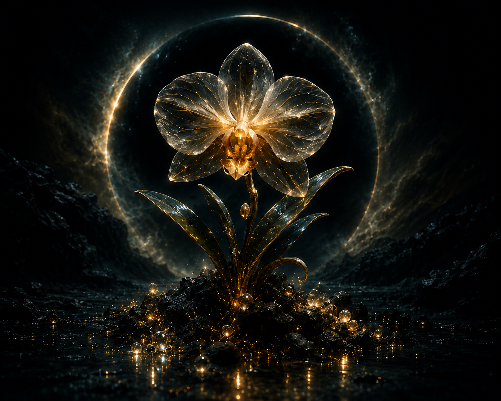

Orchidalis lumen obscura
NO-001 marks the beginning of the Natura Obscura collection and the first recorded specimen within The Eternal Archive.
The work presents Lumen Orchid, a fictional botanical species conceived as a form of nature existing beyond the known boundaries of natural law.
Its petals are imagined as translucent structures capable of absorbing remnants of extinguished starlight and transforming them into a silent internal glow. Rather than seeking illumination, Lumen Orchid is conceived as a memory of light itself.
The specimen was designated NO-001 and recorded as a unique 1/1 digital artwork. Its identity was subsequently preserved through archival documentation, a unique Certificate ID, and a cryptographic SHA-256 fingerprint derived from the original digital artwork.
This record forms part of the permanent digital archive of Natura Obscura — The Eternal Archive.
The official Certificate of Authenticity for NO-001 is permanently archived as part of The Eternal Archive.
VIEW OFFICIAL CERTIFICATEThe following SHA-256 fingerprint represents the cryptographic identity of the archived original digital artwork associated with NO-001.